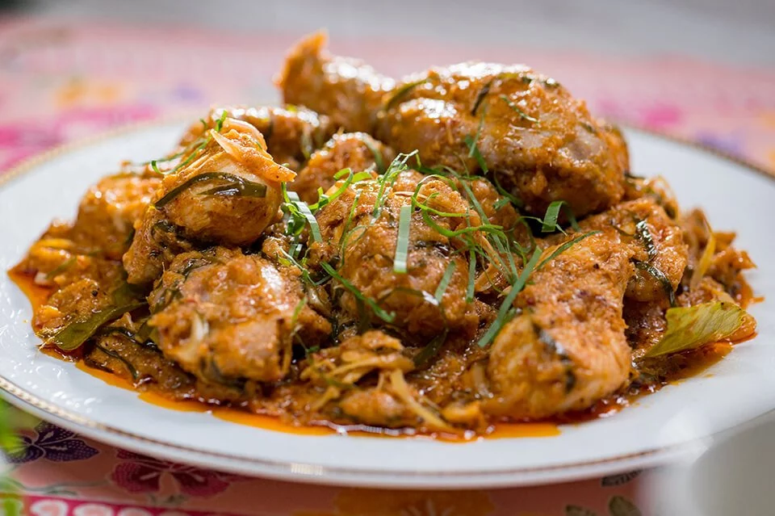

Back
Chicken Rendang

Description
Chicken Rendang is a traditional Malay dish made with chicken meat that has been simmered in creamy coconut
milk and spice paste until the sauce has been absorbed and the meat is tender and infused with flavour.
Original recipe can be found here
Ingredients
Rendang Paste:
- 100g Dry Chilli, Pre-Boiled
- 500g Red Onion, Sliced
- 80g Garlic, Sliced
- 80g Ginger, Sliced
- 130g Lemongrass, Sliced
- 80g Galangal, Sliced
- 40g Fresh Turmeric, Sliced
Other Ingredients:
- 1200g Pre-cut Whole Chicken, cut 12pcs
- 250g Anchor UHT Extra Yield Cooking Cream
- 300g Water
- 30g Coconut Kerisik
- 10g Turmeric Leaf, Sliced
- 10g Fresh Lime Leaves
- 15g Salt (to taste)
- 8g Coarse Black Pepper (to taste)
- 10g Fresh Turmeric Leaf, garnishing
Steps
- Blend all rendang paste ingredients until fine, set aside.
- Pour the blended rendang paste into large pot together with chicken, Anchor Extra Yield Cooking
Cream, water, kerisik, turmeric leaves and lime leaves.
- Cook using medium heat for around 50 minutes until the chicken cooked and tender.
- Season with salt and course black pepper to taste.
- Just before turning off the heat, add in slices of fresh turmeric leaf to serve. Enjoy!